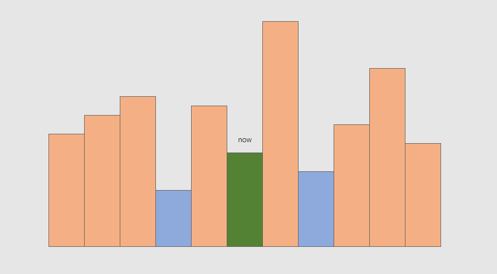
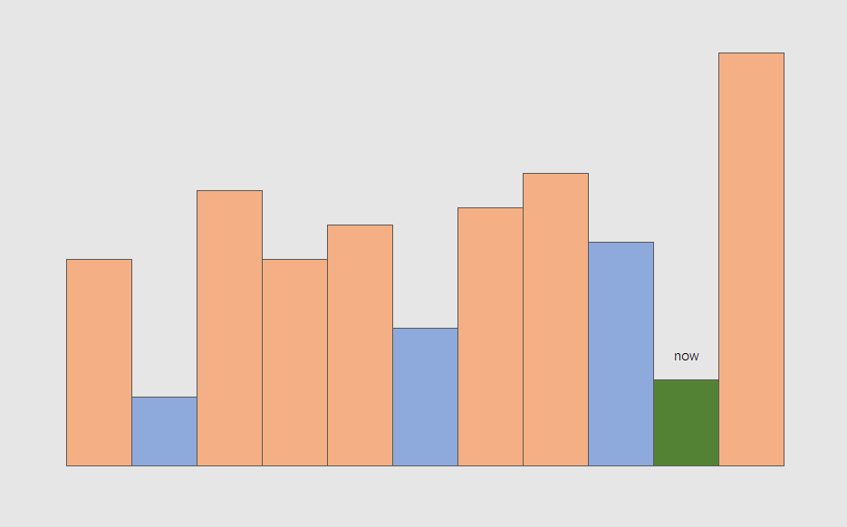

单调性
先看问题，再来总结
单调栈
给定 n 个非负整数，用来表示柱状图中各个柱子的高度。每个柱子彼此相邻，且宽度为 1 。 求在该柱状图中，能够勾勒出来的矩形的最大面积。
这题关键在于分析这个图：

假如枚举以每个矩形为天花板所能取到的最大面积，问题就转换为如何快速找到左侧和右侧的第一个比当前矩形更矮的矩形
线性序列找第一个大于/小于当前值的值，立刻想到单调栈，问题在于
- 该维护递增栈还是递减栈
- 能不能扫一次就得到左右的信息
首先看看如果维护一个递减栈，当迭代到 now 时，栈中有什么值
显然栈里是一个递减序列，如果用语言来描述，栈 stk 满足：
- 栈中任意一个元素
x，其下方的元素y是x左侧的第一个更大值
显然这和我们要维护的信息是相悖的，譬如上图中，到 now 时左侧蓝色矩形会被直接丢弃
我们再看维护一个递增栈，对称地可以知道，栈中元素应该满足下方元素是上方元素左侧的第一个更小值，这正是我们要求的
因而此题应该维护一个递增栈
再看第二个问题，能不能在维护栈的过程中同时得到右侧第一个更小值
这个问题看似不那么重要，只是一种可选的优化，然而其也蕴含了重要的性质。
答案是可以。
考虑递增栈的更新过程，蓝色代表栈中元素，现在迭代到绿色 now：
则 now 将挤掉栈中的顶部两个蓝色矩形，

综上，单调栈（递增栈）具有以下性质：
- 栈中元素
x下方是y，则y是x左侧的第一个更小元素 - 迭代到
x后，x一定是栈顶元素 - 迭代到
x时，x挤掉了y, z，则x一定是y, z的右侧第一个更小元素，并且一定不是其他任何元素的右侧第一个更小元素